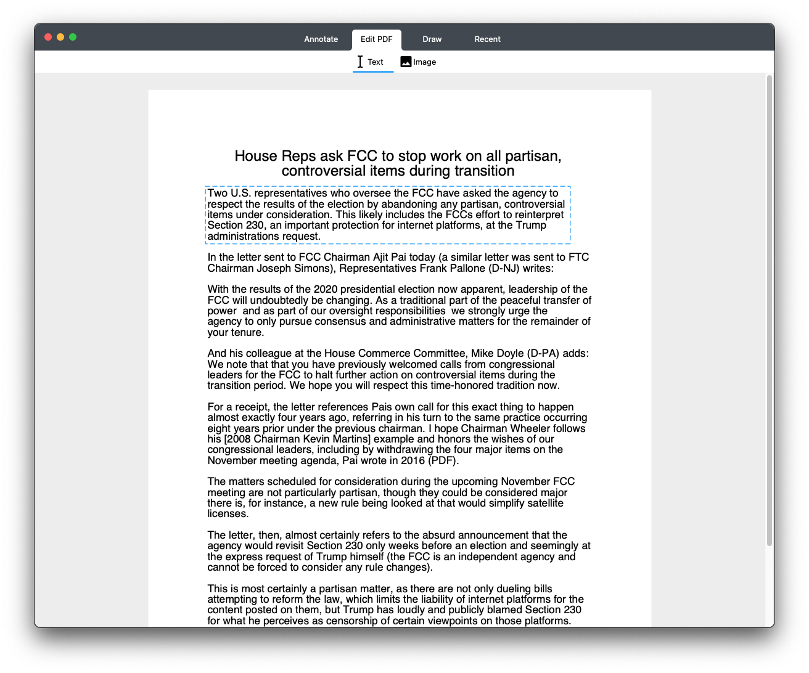

First Alpha Focus on UI
2020-10-16 by Aaron Elkins
Today, The first alpha focus on UI just released, I alway focus on the core PDF engine called Gene, but just a few days ago, I turned to work on the UI, and now we have a tab view, toolbar view, and a Text tool which works, and a Image tool which does nothing by now.
I have experience with UI design and coding, since all of my previous macOS app have its own UI looking, and I made them look unique. I like to work on UI design and coding too, I get excited while making a nice looking UI, or they have unique and beautiful looking.
Although the UI part just begins, I would like you to preview the screenshot of the looking for alpha version.

If you are interested in the UI alpha version. Download it here.
If you want to support this project, just Donate here.
-- END --